Renovasi
Memperbarui ruang, memperbaiki fungsi, dan memberi kehidupan baru pada bangunan yang sudah ada.
↗Ruang yang baik dimulai dari perencanaan yang tepat. Uncle Project membantu mewujudkan renovasi, pembangunan rumah, dan ruang usaha dengan komunikasi yang jelas sejak awal.
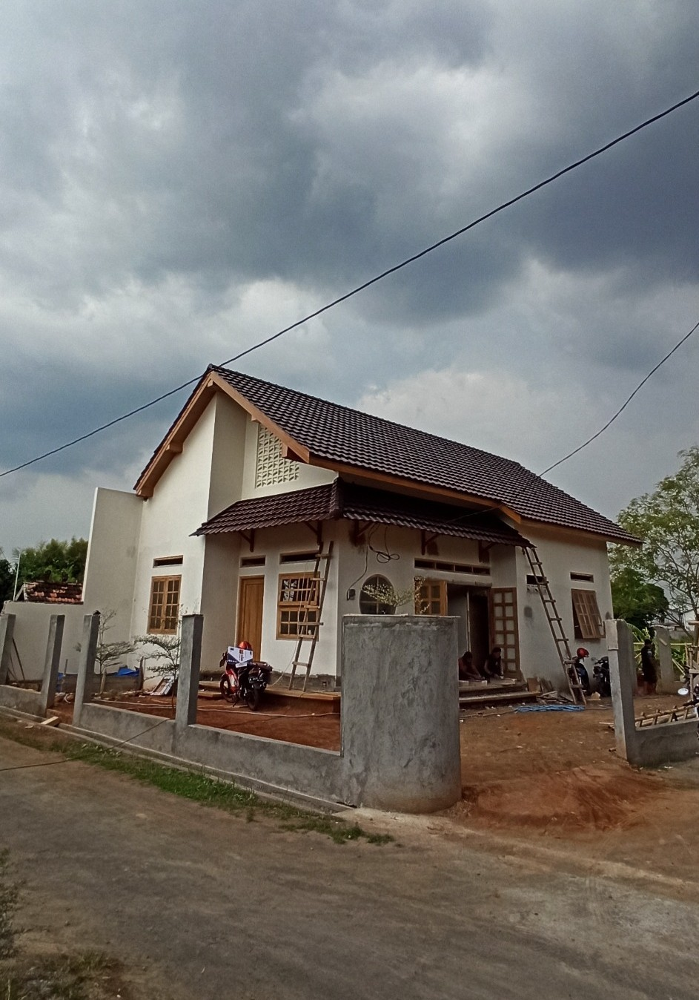
Setiap proyek punya kebutuhan berbeda. Kami mulai dengan memahami tujuan, kondisi lokasi, dan prioritas Anda sebelum menentukan langkah berikutnya.
Memperbarui ruang, memperbaiki fungsi, dan memberi kehidupan baru pada bangunan yang sudah ada.
↗Pembangunan rumah atau bangunan dari awal dengan tahapan kerja yang direncanakan.
↗Penataan dan pengerjaan interior untuk mendukung kenyamanan serta kebutuhan aktivitas.
↗Pengerjaan ruang komersial seperti kantor, tempat usaha, dan area operasional.
↗Perawatan dan perbaikan berkala untuk kantor, rumah sakit, pabrik, mall, dan berbagai jenis gedung.
↗Cuplikan jenis pekerjaan yang menjadi fokus Uncle Project. Kunjungi Instagram untuk melihat dokumentasi proyek aktual dan perkembangannya.
Dokumentasi proyek rumah di Kudus, dari proses pembangunan hingga ruang interior.
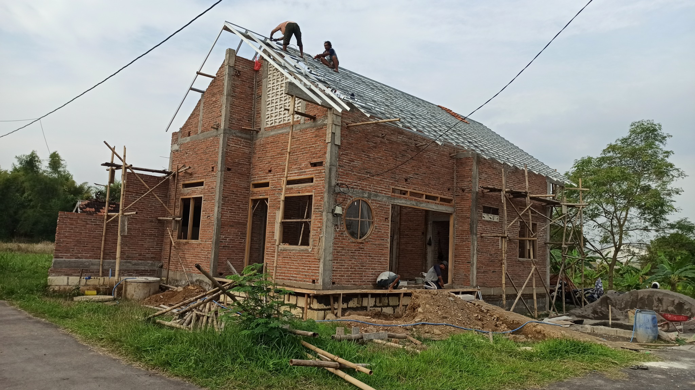
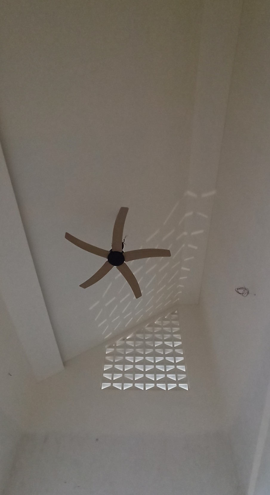
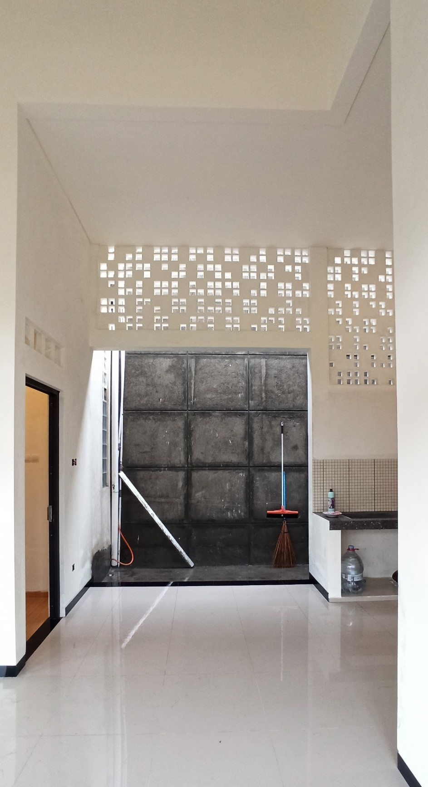
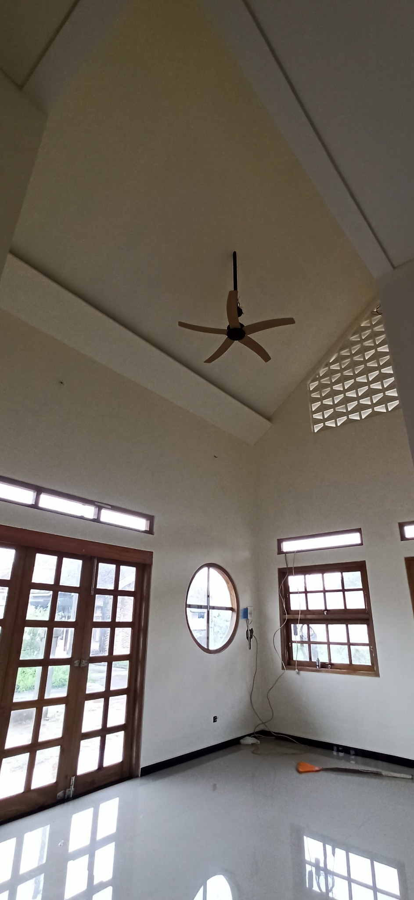
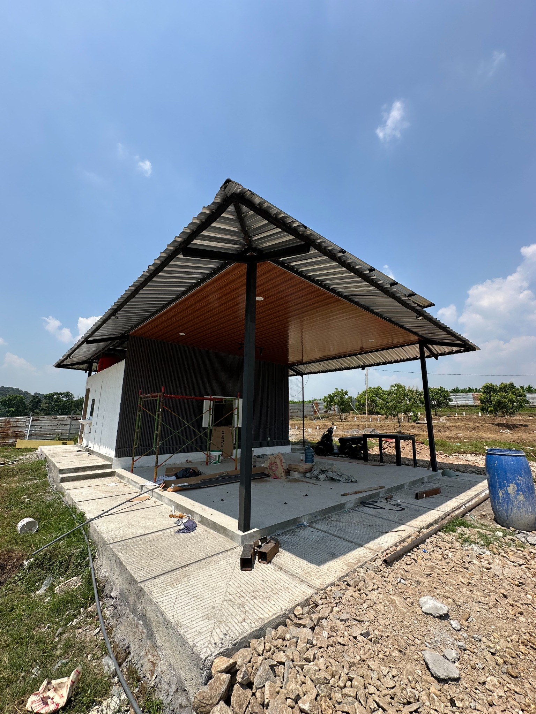
Dokumentasi eksterior dan proses pengerjaan ruang krematorium hewan.
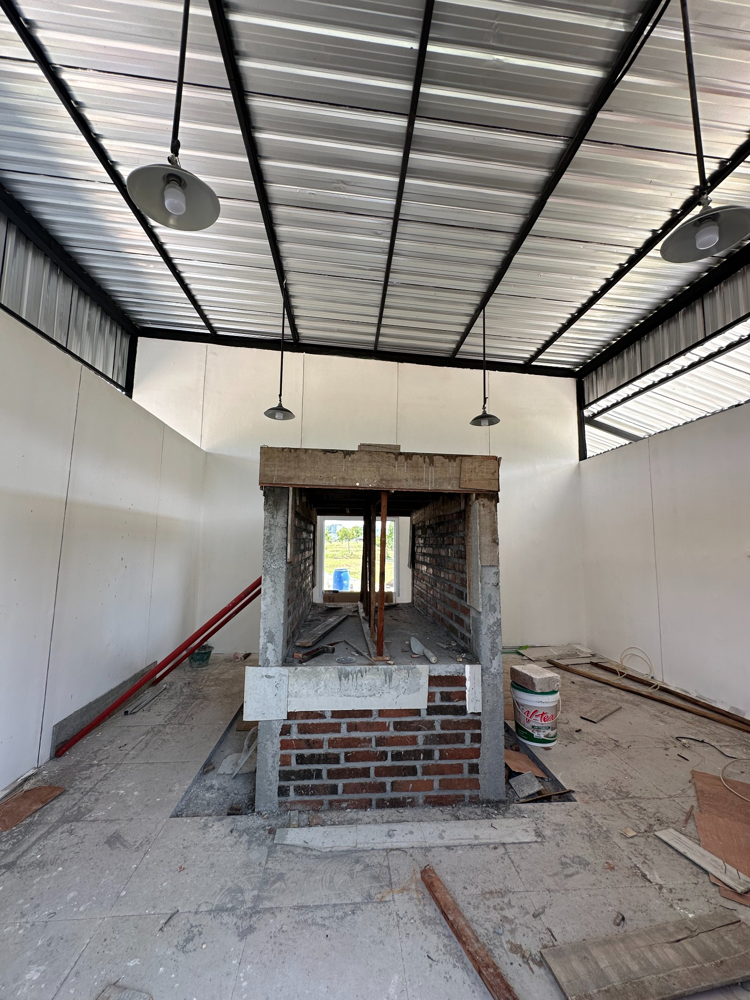
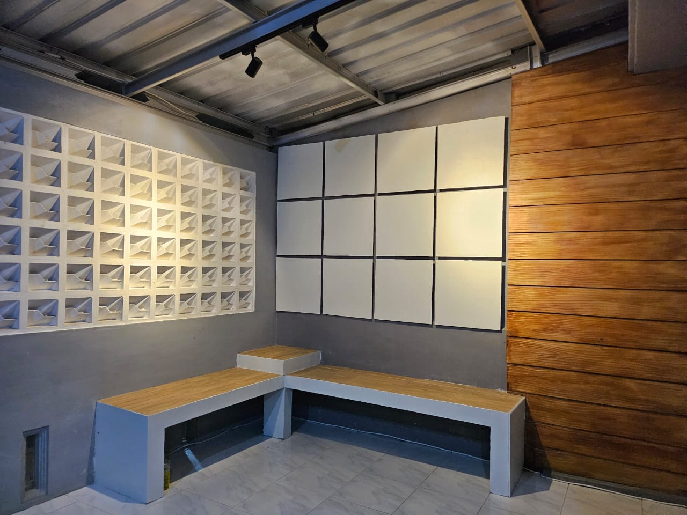
Penataan area teras dengan permainan tekstur, panel, dan tempat duduk built-in.
Visualisasi konsep untuk membantu membayangkan bentuk, suasana, dan fungsi ruang sebelum diwujudkan.
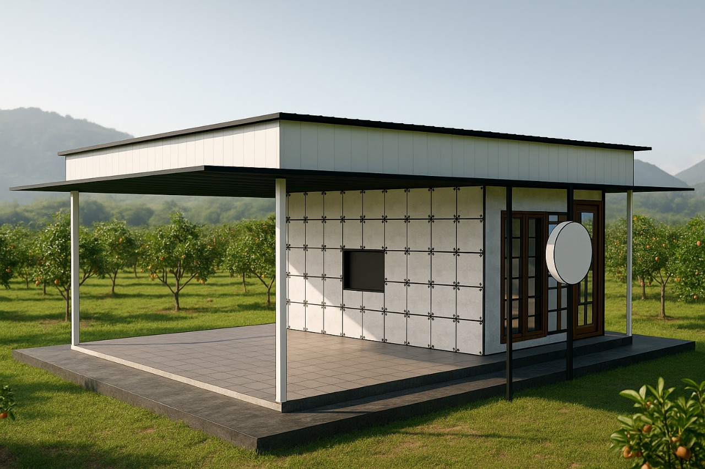
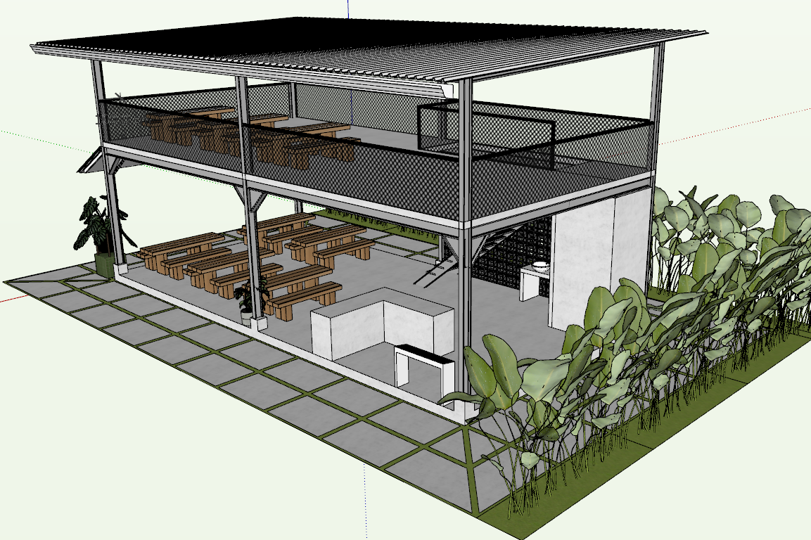
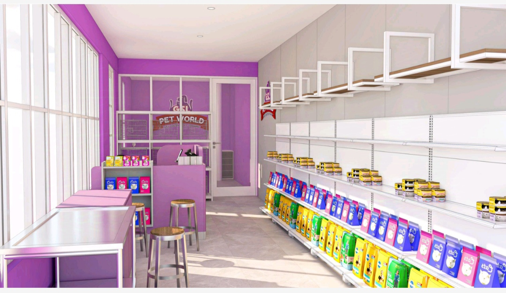
Foto pada kategori House, Krematorium Hewan, dan Teras menggunakan dokumentasi yang kamu kirim. Bagian Design ditampilkan terpisah karena berisi visualisasi konsep/desain, bukan foto hasil bangunan akhir.
Uncle Project adalah kontraktor yang berbasis di Semarang, menangani pekerjaan pembangunan dan renovasi untuk hunian maupun ruang usaha. Kami percaya proses yang baik dimulai dari mendengarkan kebutuhan, menyamakan ekspektasi, dan menyusun pekerjaan dengan jelas.
Setiap keputusan teknis perlu mempertimbangkan fungsi, kondisi bangunan, anggaran, dan tujuan jangka panjang pemiliknya.
Kami membantu calon klien memahami langkah berikutnya sebelum pekerjaan dimulai.
Ceritakan tujuan, gambaran ruang, lokasi, serta kebutuhan utama proyek Anda.
Pelajari kondisi lokasi, lingkup pekerjaan, dan opsi solusi yang memungkinkan.
Samakan lingkup, estimasi, material, jadwal, dan ketentuan pekerjaan sebelum mulai.
Pekerjaan berjalan berdasarkan kesepakatan dan koordinasi sesuai kebutuhan proyek.
Ceritakan gambaran proyek Anda. Kita mulai dengan diskusi untuk memahami kebutuhan dan langkah yang paling masuk akal.